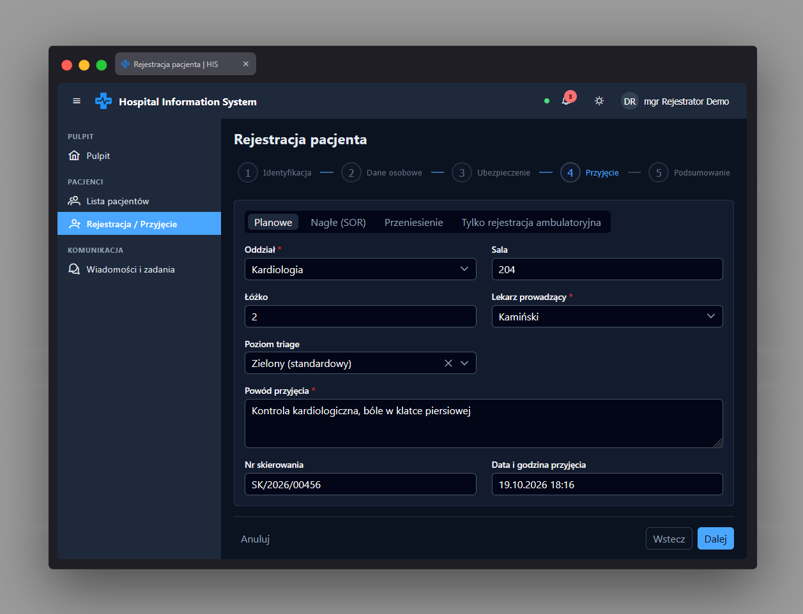

Krok: Przyjęcie app-registration-admission-step
Ścieżka
To nie jest samodzielnie routowana strona, lecz czwarty krok
(zakładka) wieloetapowego kreatora rejestracji pacjenta (p-stepper
z StepperModule PrimeNG), osadzony w komponencie
PatientRegistrationPage jako
AdmissionStep, obok sąsiednich kroków
IdentityStep, PersonalStep i
InsuranceStep.
Kreator jest dostępny pod adresem
/patients/register przy rejestracji nowego pacjenta
(chronione przez permissionGuard z uprawnieniem
PATIENT_WRITE) oraz pod
/patients/:patientId/edit w trybie edycji
istniejącego pacjenta. W trybie edycji ten sam krok 4 w kreatorze
nie wyświetla formularza przyjęcia - zamiast niego pokazywane jest
tylko podsumowanie "Zmiany"
(app-registration-summary); formularz
AdmissionStep jest renderowany wyłącznie w trybie
tworzenia nowego pacjenta (mode() === 'create').
Przeznaczenie
Zbiera dane dotyczące przyjęcia nowego pacjenta: typ przyjęcia,
oddział, lokalizację (sala, łóżko), lekarza prowadzącego, poziom
triage, powód przyjęcia, numer skierowania oraz datę i godzinę
przyjęcia. Formularz jest reaktywny
(ReactiveFormsModule), przekazywany do komponentu
jako wymagany input form (typ
AdmissionForm z
patient-registration.forms.ts), razem z listami
oddziałów (wards) i lekarzy (doctors)
oraz flagą ambulatoryOnly.
Gdy wybrany typ przyjęcia to "ambulatoryjne"
(outpatient),
ambulatoryOnly jest ustawiane na true i
cała reszta formularza (oddział, sala, łóżko, lekarz, triage,
powód, skierowanie, data przyjęcia) jest ukrywana oraz
dezaktywowana w formularzu (applyAdmissionType) -
pola te są wtedy zbędne, bo przyjęcie ambulatoryjne nie wiąże się
z pobytem na oddziale.
Dane wejściowe
-
Typ przyjęcia (
admissionType) - przycisk wyboru (p-selectbutton), zawsze widoczny, bez możliwości pustej wartości. -
Oddział (
wardId) - lista wyboru zwards, wymagane pole (gdy nie ambulatoryjne). -
Sala (
room) i Łóżko (bed) - pola tekstowe, opcjonalne. -
Lekarz prowadzący
(
attendingPhysicianId) - lista wyboru zdoctors(po nazwisku), wymagane pole. -
Poziom triage (
triageLevel) - lista wyboru z możliwością wyczyszczenia; wymagane tylko, gdy typ przyjęcia to "nagłe" (emergency). -
Powód przyjęcia (
reason) - pole tekstowe wieloliniowe (textarea), wymagane. -
Nr skierowania (
referralNumber) - pole tekstowe, opcjonalne. -
Data i godzina przyjęcia
(
admittedAt) - wybór daty z czasem (p-datepicker, formatdd.mm.yy), domyślnie bieżący moment.
Akcje
-
Włączanie/wyłączanie i walidacja pól w zależności od typu
przyjęcia (
applyAdmissionType): dla "ambulatoryjne" pola oddziału, lekarza, powodu i triage są dezaktywowane i zwalniane z walidacji; dla pozostałych typów są wymagane (triage dodatkowo wymagany tylko dla "nagłe"). -
Przejście do kolejnego kroku (Podsumowanie) odbywa się po
walidacji w nadrzędnym komponencie kreatora
(
tryAdvanceStep4) - przycisk "Dalej" w stopce kreatora (app-wizard-step-footer), wspólnej dla wszystkich kroków, z opcją powrotu do poprzedniego kroku lub anulowania rejestracji. -
Przy rejestracji nowego pacjenta dane z tego kroku są mapowane
(
buildAdmission) do żądania przyjęcia: dla typu "ambulatoryjne" wysyłany jest tylko typ przyjęcia i bieżący czas; dla innych typów - typ, data przyjęcia, oddział, sala, łóżko, lekarz prowadzący, poziom triage, powód i numer skierowania. Przyjęcie jest wysyłane do API po utworzeniu pacjenta (admitPatient). -
W trybie edycji pacjenta formularz tego kroku jest wypełniany
danymi bieżącego przyjęcia pacjenta (
prefillForms), ale nie jest renderowany ani edytowalny - krok 4 w edycji pokazuje jedynie podsumowanie zmian.
Zrzut ekranu
